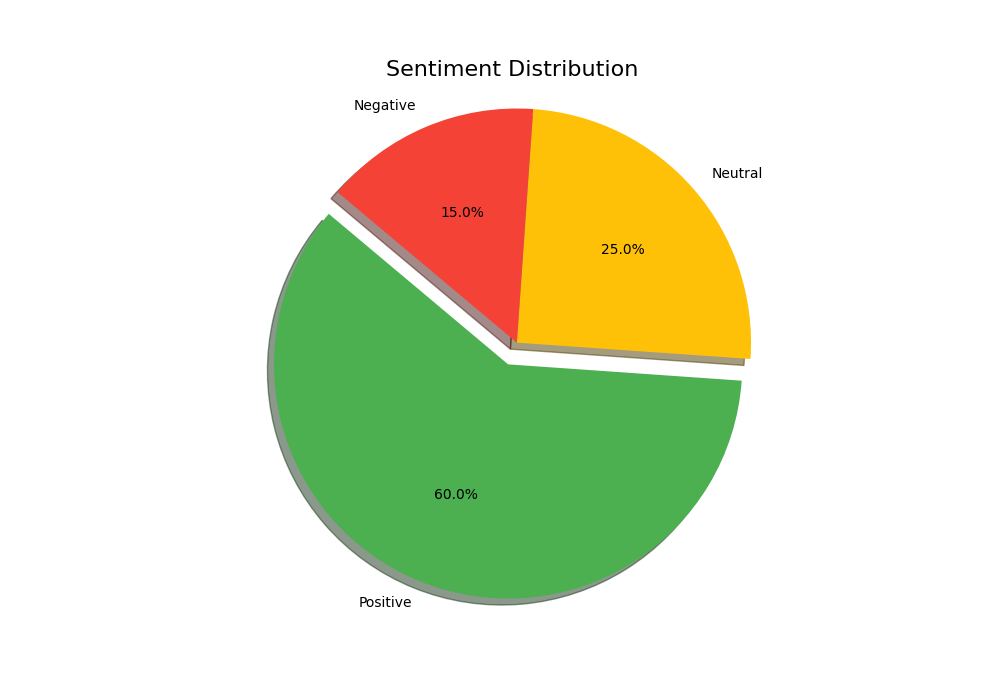
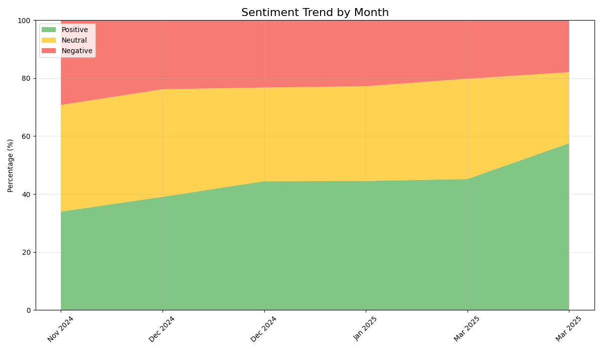

| Product Name: | Ergonomic Office Chair |
| Total Reviews: | 105 |
| Sentiment Score: | 0.31 |
| Average Rating: | 3.6 |
| Sentiment | Count | Percentage |
|---|---|---|
| Positive | 43 | 41.0% |
| Neutral | 51 | 49.0% |
| Negative | 10 | 10.0% |
Sentiment Distribution:
Sentiment Trend Over Time:
Generated on: 2025-03-31 16:27:44